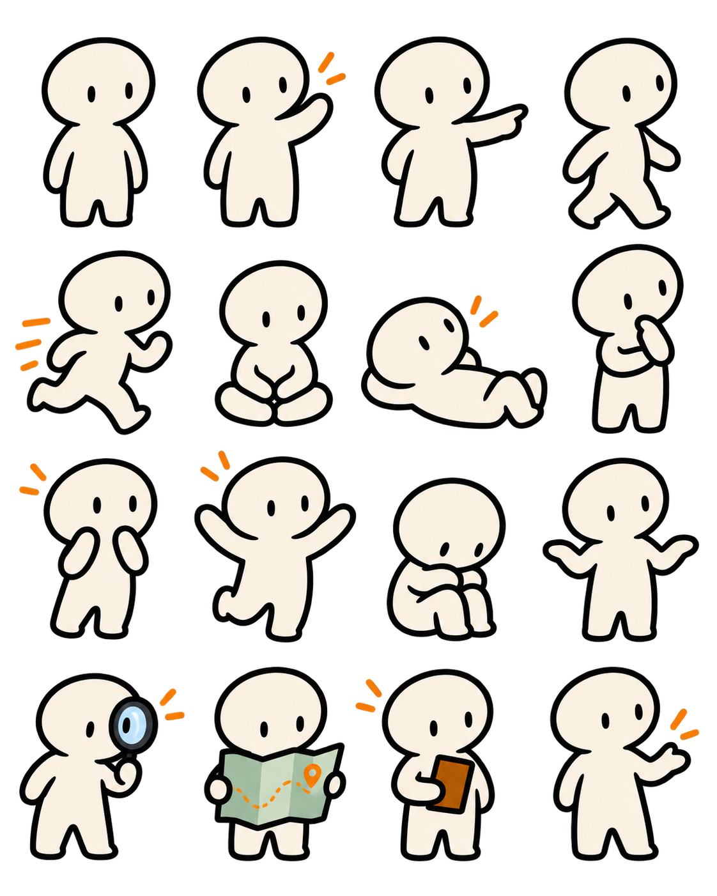
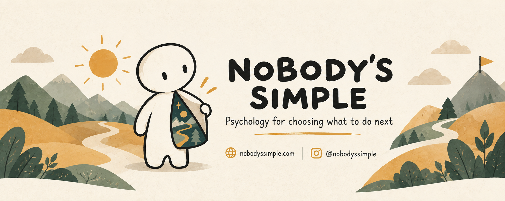
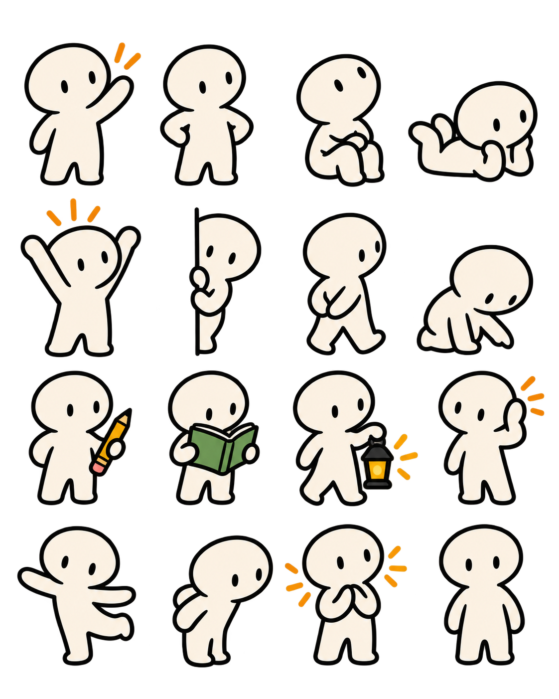

A practical psychology project
Life is complicated.
People are, too.
Clear thinking tools for the moments when your mind is crowded, your relationships feel tangled, or you simply do not know what to do next.
01
Try a system
What is happening right now?
Choose the closest fit. You can change your answer; this is a starting point, not a diagnosis.

A feeling is information, not an instruction
Read the piece →The difference between pausing and avoiding
Read the piece →Learn without the jargon
Psychology that helps you notice more—not label yourself faster.
Short, careful explainers connect psychological ideas to ordinary life while keeping uncertainty, context, and individual differences in view.
Explore the learning library →From the channel
Watch Nobody's Simple
Animated psychology, complicated questions, and practical systems for real situations.
The idea behind the project
Nobody is a type. Nobody is a single story.
Nobody's Simple begins from a basic premise: psychological ideas should help people see their situation more clearly, not compress them into a neat category.
It is a growing home for interactive tools, original writing, accessible education, videos, and experiments in making difficult moments more workable.
Keep it close
Use it like an app
Add this site to your phone's home screen for quick access to tools, writing, and saved resources—no app store needed.
On iPhone: tap Share, then “Add to Home Screen”.
On Android: open the browser menu, then tap “Install app”.